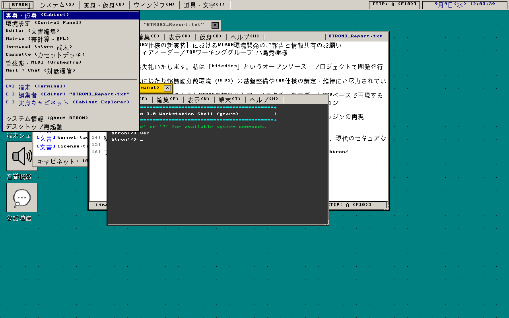
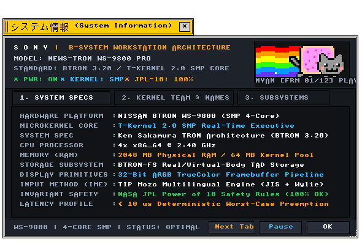

ワークベンチ (Workbench)
空間デスクトップ · 実身・仮身操作 · ウィンドウ管理 · タスクバー
BTRON3 3.20仕様に基づく空間ハイパーメディアデスクトップ環境
"Spatial hypermedia desktop environment adhering to the BTRON3 Specification 3.20."
← アプリケーション一覧 (Applications Index)
ワークベンチ（Workbench） — ワークベンチ（Workbench）は、BTRONの実身・仮身ネットワークを直接操作する空間デスクトップ環境。ファイルツリーを排し、文書中心の直感的なハイパーメディア操作を提供します。
"Document-centric desktop shell providing direct manipulation of Real and Virtual Objects without hierarchical directory paths."
画面プレビュー (Screen Preview)

実機描画フレームバッファより抽出されたBTRONワークベンチ空間デスクトップ (［BTRON］メインメニュー展開・初期起動画面)

実機描画フレームバッファより自動抽出された透過システム情報ダイアログ (About B-System Workstation)
概要 (Overview)
ワークベンチ（Workbench）は、BTRONの実身・仮身ネットワークを直接操作する空間デスクトップ環境。ファイルツリーを排し、文書中心の直感的なハイパーメディア操作を提供します。
"Document-centric desktop shell providing direct manipulation of Real and Virtual Objects without hierarchical directory paths."
1. メニュー構造と操作体系 (Menu Architecture & Operations)
Workbench が提供する標準メニューバー構造および操作体系の仕様。
"Standard menu bar hierarchy and interactive command bindings."
| メニュー項目 |
機能説明 (Functional Description) |
技術仕様・C99実装 (C99 Architecture) |
| ファイル (File) |
新規実身作成、キャビネット起動、文書インポート、ワークスペース保存 |
mcre_men, src/desktop/desktop.c |
| 編集 (Edit) |
仮身の複製、実身リンク作成、移動、ゴミ箱への破棄 |
実身・仮身参照カウント制御 |
| 表示 (View) |
アイコン整列（32px/64px）、リスト表示切替、グリッド吸着ON/OFF |
appearance_get_icon_size() |
| ウィンドウ (Window) |
重ねて表示（カスケード）、並べて表示（タイル）、最小化、全非表示 |
src/desktop/global_menu.c |
2. 機能仕様とアーキテクチャ (Functional & Architecture Specifications)
Workbench アプリケーションの内部構造、データモデル、およびシステムコール仕様。
"Internal architectural components, memory models, and system call bindings."
| コンポーネント・機能名 |
動作概要と機能仕様 (Functional Specification) |
技術仕様・C99構造体 (C99 Implementation) |
| 実身・仮身操作モデル |
実身（データ実体）へのポインタである仮身（リンク）を空間配置。実身の重複複製なしに多重参照可能。 |
ハイパーメディアポインタ構造 (TAD_FUSEN_VOBJ) |
| ウィンドウマネージャ |
タイトルバー、クローズボタン、3D二重ベベル枠、リサイズハンドル、コンパクトスライディングタブ対応。 |
src/window/wnd.c, rsz_wnd |
| グローバルシステムメニュー |
画面最上部の固定メニューバー。システム管理、実身・仮身操作、道具箱、日本語カレンダー常駐。 |
src/desktop/global_menu.c |
| デスクバー (Tracker) |
画面隅のタスクバーと常駐アプレットトレイ。全アプリの起動とアクティブタスク切替。 |
src/desktop/tracker.c |
関連コンポーネント (Related Components)